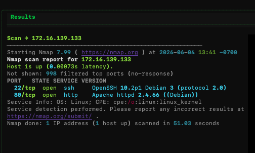
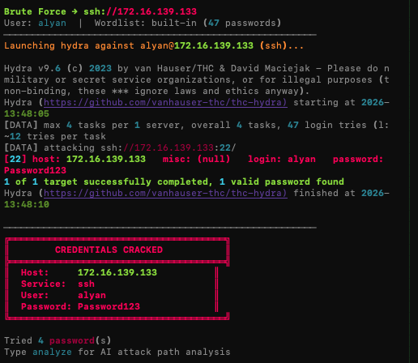
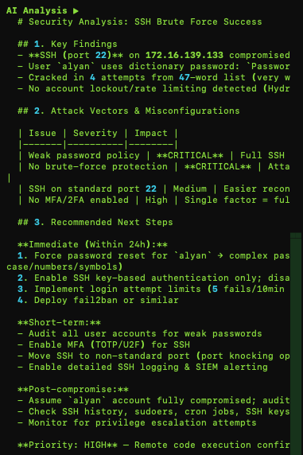

Screenshots




A command-line security assistant that automates reconnaissance and OSINT, then uses an LLM to turn raw findings into an analyst-style report.
Screenshots



CyberPartner is a terminal-based security assistant I built in Python with a Textual TUI. The idea was simple: a lot of early recon work is repetitive glue between tools, so I wanted one command-line partner that runs the collection for me and hands back something readable.
It pulls subdomains and certificate data from crt.sh, harvests email patterns through the Hunter.io API, and drives nmap as a subprocess for service enumeration. Once the data is collected, it passes everything to the Anthropic API to summarize the findings into a clean, analyst-style report instead of a wall of raw output.